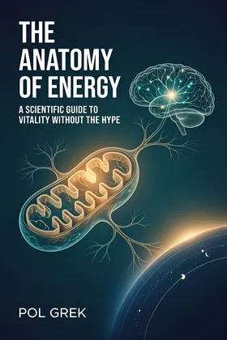

НаучпопУровни A–DС чего начать
Биохакинг мозга
Как улучшить память, фокус и энергию — и не сломать психику
Уровни доказательности A–D · без «волшебных» протоколов
Цена на Литрес / Amazon

Серия «Мозг»
Манифест подхода «сначала не навреди»
Сначала бесплатная глава — потом покупка на Литрес.
Реклама · erid: 2VfnxyNkZrY · партнёрская ссылка Литрес
Оплата на Литрес. Здесь — описание и фрагмент; сайт не принимает платежи.
A — надёжные данные; B — хорошие исследования; C — ограниченные данные; D — наблюдения.
Серия «Мозг»
Все книги серии →Манифест осторожного биохакинга. Почему «больше протоколов» часто хуже, и как отделить пользу от маркетинга, не превращая жизнь в лабораторию без выходных.
«2 литра воды в день — часто маркетинг, а не физиология. Главный навык биохакинга — вовремя остановиться.»
— Пол Грэк
Фрагмент из рукописи. Если стиль зайдёт — полный текст на Литрес.
ГЛАВА 1. Мышцы как эндокринный орган: BDNF, иризин и нейропластичность
Вступление: как я понял, что мышцы — это не только про силу
Я думал о мышцах примерно так же, как большинство людей думают о шинах: полезная вещь, пока не спустит. Они нужны, чтобы тело двигалось — и всё. Никакого второго смысла. Я тренировался для силы, для выносливости, для эстетики. Но я не задумывался о том, что мышцы — это ещё и орган, который разговаривает с мозгом.
В «Биохакинге мозга» мы разбирали BDNF со стороны мозга — как его снижает стресс и повышают упражнения. Здесь — другой угол: как сами мышцы производят BDNF и почему это меняет представление о тренировках.
Всё изменилось, когда я наткнулся на исследования о миокинах. Оказалось, что во время сокращения мышцы выделяют десятки сигнальных молекул, которые путешествуют по крови и влияют на мозг, печень, жировую ткань, иммунную систему.
Мышцы — это не просто исполнители команд мозга. Это активные участники диалога. Они посылают сигналы, которые меняют настроение, улучшают память, защищают от стресса.
В этой главе мы разберём, как мышцы общаются с мозгом через миокины. Что такое иризин и как он связан с BDNF. Почему физические упражнения — это не только про тело, но и про нейропластичность. И главное — как тренироваться, чтобы мышцы работали на ваш мозг, а не только на зеркало.
Что такое миокины и почему мышцы — это эндокринный орган
Долгое время эндокринная система ассоциировалась с железами: гипофиз, щитовидка, надпочечники, поджелудочная. Они выделяют гормоны, которые регулируют всё тело.
В 2000-х годах учёные обнаружили, что скелетные мышцы тоже выделяют сигнальные молекулы. Их назвали миокинами (от греч. «миос» — мышца и «кинос» — движение).
Сейчас известно более 600 миокинов. Большинство из них изучены слабо — мы разберём только те, для которых есть данные на людях. Некоторые действуют локально — на сами мышцы. Другие — системно, влияя на мозг, печень, кости, жировую ткань, иммунитет.
Ключевые миокины для этой главы:
Иризин — выделяется при физической нагрузке, особенно при аэробных упражнениях. Он стимулирует превращение белого жира в бурый (термогенный), улучшает метаболизм и, как показывают исследования, повышает уровень BDNF в мозге.
BDNF (brain-derived neurotrophic factor) — «удобрение для мозга». Он помогает нейронам выживать, расти и формировать новые связи. Раньше считалось, что BDNF вырабатывается…

Пол Грэк — научпоп о мозге без эзотерики. Уровни доказательности A–D, сначала проверка на себе.
Подборка
Как улучшить память, фокус и энергию — и не сломать психику
Уровни доказательности A–D · без «волшебных» протоколов
Цена на Литрес / Amazon
Научный план сохранения когнитивных функций до глубокой старости
По данным 100+ исследований · уровни A–D
Цена на Литрес / Amazon

Три системы, которые решают, хватит ли вам сил
Уровни доказательности A–D
Цена на Литрес / Amazon

Как мозг влияет на доходы — и что с этим делать
Уровни доказательности A–D
Цена на Литрес / Amazon